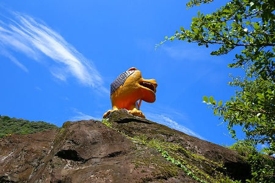

宮崎県中西部の山中に位置する西米良村。
ハッキリ言ってかなり辺鄙な場所だ。
何故そんなところにわざわざ行ったのよ？という質問はさておき、その道中で素敵すぎる神社、というか公園を見つけたのでここに御注進させていただきますよ。
西米良の中心街（といっても店が数件並んでいるだけだが）よりやや北、竹原という在に天満宮がある。
こんなですもの。
岩の上に何やら素敵な方々がいらっしゃるのがお判りいただけるだろうか？
これは…
福助さん？
ああ、やっぱり福助さんだあ。
コンクリの福助さんは初めて見たような気がするぞ。
何だか着物の袖がパンパンに膨らんでいて、面白い感じになっちゃってますね。
福助さんの背後の岩の上にはライオンが吠えている。
そのライオンの居る岩の足元には小さなお堂が。
弘法大師である。
大師サマの足元にはかなり傷んだお像もあったりする。

岩の上で吠えるライオン。
百獣の王の威厳はチョットないかなー。
でもピンと張った尻尾は立派ですよ！
何の記念碑だろうか？
さらに岩の上には得体のしれない動物が。山猫なのだとか。
そして他のコンクリ動物とは一線を画す出来の馬。
中々の力作である。
胴体には
昭和3年9月建立と刻まれている。
ん？ちょっと待って。ココの動物って全部戦前生まれなの？
さらに足の部分には 濱砂武蕨（？）里（？）徳 作 とある（一部不明瞭ご勘弁）。
地元の人なのだろうか？
さらに首筋には 指導人 有馬廉（？）太郎とある。
他の動物などにはこのような銘や指導者の名前などは記されていなかったので、この馬だけは特別な存在なのだろうと考えられる。
境内を覆うように巨木がある。
その足元には共同記念碑という石碑が建っている。
コンクリート製の蔵のような建物。額には頌徳堂とあった。
傍らにあった説明板によると
ここは
竹原の住民によってつくられた公園なのだという。
この地区の住民は共同開田をするなど結束が強く、行政の手を借りずに地区の住民の力だけで昭和2〜3年にこの公園を造ったのだ。
敷地内には巨岩があったが、岩の一部は削って田んぼの石垣に使ったりしたが、大きなものはそのまま残されているとの事。
つまり福助さんも馬もライオンも、み〜んな昭和2〜3年に造られたものなのだ。
昭和2〜3年と言えば日本で最初に造られた聚楽園大仏や別府大仏などが建立された時期である。
コンクリートの造形物など都市部ですら珍しい時期だったはずである。
そんな時期にこの宮崎の片田舎（失礼）でこれだけの規模のコンクリ像が存在していたとは驚くほかない。
ひょっとして、
戦前の日本のコンクリ造形物は我々が想像する以上に普及していたのかもしれないっすね。

背後の岩の上には牛が！
この牛は粘土の塑像の上からコンクリートを塗り付ける、という斬新な手法によって出来ている。
因みにこの牛とライオンはかつては耳から電線を突っ込まれて目がチカチカと光っていたという。
…嗚呼、絶対それ見たかったなあ。
巨石の上に佇む福助さん。
顔を間近で見たいので岩によじ登ってみた。
正面に回り込むことは出来なかったので、ギリギリの場所に立ち、腕を伸ばしてカメラでパチリ。
思いがけず後ろでライオンさんが応援してくれていたよ。ガオー！